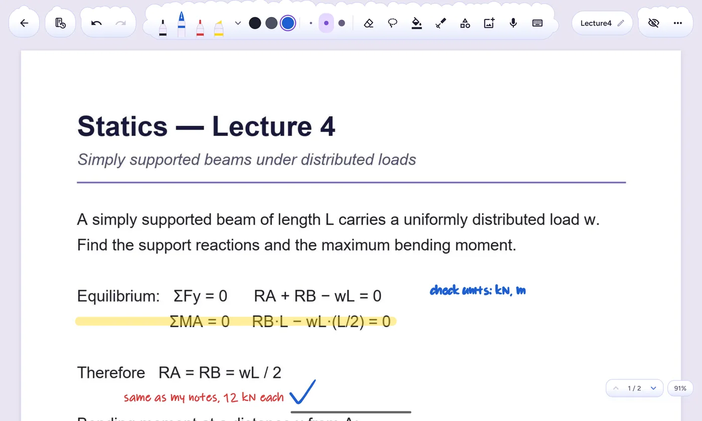
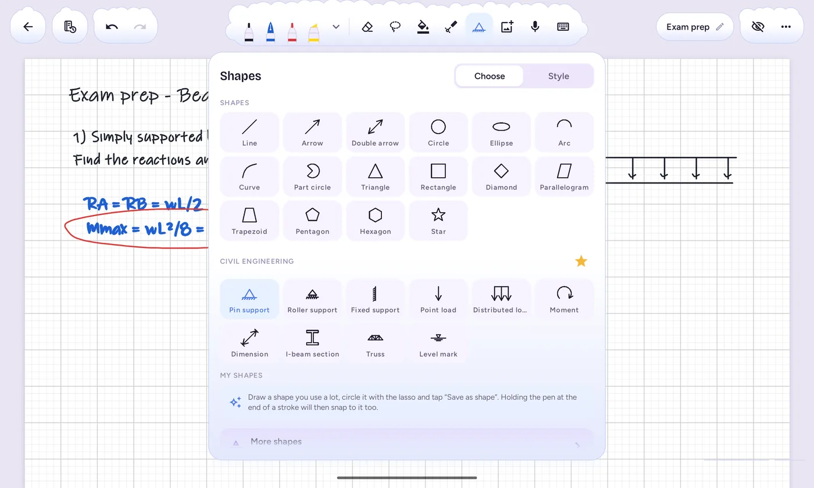
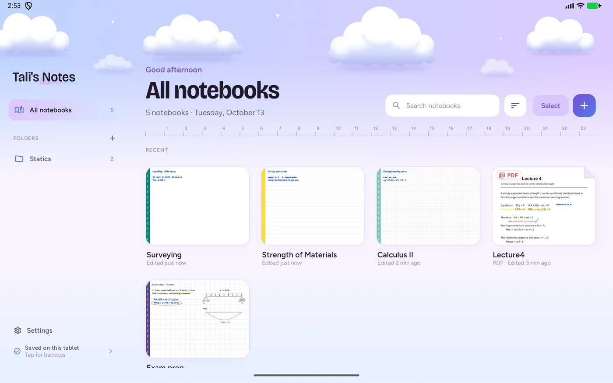

Features
Everything a lecture needs, nothing in the way
It started as an app for one civil-engineering student, so it's built around how students really take notes: slides, problem sheets, sketches and formulas.

Write straight on your slides
Open a lecture PDF from any app and write over it. Pages stay sharp at any zoom, and you can save it as a notebook or just look.
- Fineliner, fountain pen, pencil, calligraphy and highlighter
- Dotted and dashed lines, three thicknesses per pen
- Export back to PDF, at the quality you choose

Shapes that snap clean
Draw a rough box, hold the pen still for a moment, and it becomes a perfect one. Lines lock to tidy angles, and shapes line up with each other as you move them.
- Shapes for eleven subjects, from beams and circuits to economics graphs
- Drag a shape's dots to reshape it, with live angles and lengths
- Save your own shapes and reuse them

A calm place for every course
Folders inside folders, a colour for each, starred notebooks for the ones you open every day, and a search that finds them fast.
- A4 pages or an endless canvas, portrait or landscape
- Grid, dots, lines, Cornell and engineering paper, or your own
- Light and dark, in four colour families
Voice memos
Record the lecturer beside the page you're writing on, and play it back right there.
Made for the S Pen
Low-latency ink, palm-friendly touch, and the pen's button to erase or switch between your starred pens.
Backups that just happen
Your notebooks back themselves up to your Google Drive moments after you close them. A new tablet restores everything in one tap.
Lasso, copy, lock
Circle anything to move, resize, recolour or mirror it. Lock a diagram so a stray palm can't nudge it.
Pictures and photos
Drop in a photo of the whiteboard, crop it, and write right over it.
Typed text too
For the times a keyboard is quicker: text boxes you can size, move and write around.
Privacy
Your notes stay yours
Saved on your tablet
Everything you write lives in the app on your device. There's no account to make, and no ads or tracking.
Backups go where you choose
A file on the tablet, or your own Google Drive, OneDrive or Dropbox. Nothing is ever sent to us.
Google Drive, kept separate
If you turn on Drive backup, the app keeps your notebooks in a “Tali's Notes” folder in your own Drive. It can only see the files it created there, never anything else.
The full details are in the privacy policy.
About
Made by one person, for one student first
Hi, I'm Ariel. I make Tali's Notes, a free handwriting notes app for Android tablets and the S Pen, built for students.
Tali's Notes began as an app for Tali (my girlfriend!) and grew from there, with no ads, no account and no data collection. It's free and will stay free.
— Ariel
Support the app
The app is free and will stay free. If it helps you through a semester and you'd like to say thanks, a coffee keeps the work going.
Buy me a coffee on Ko‑fiCompletely optional. Nothing in the app is locked.
Contact
Write to me
I read every message. Pick what it's about and your email app opens with a start already written.
Work with me
A project, a job, a collaboration, or the app for your school or class.
Email about work →Talk to me
Ideas, feedback, a bug, or just to say hi. Every message helps the app grow.
Send a message →I want it on Apple
On an iPad? Tell me how much you want a version for it. Enough requests and it happens.
Ask for iPad →